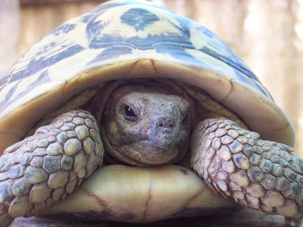
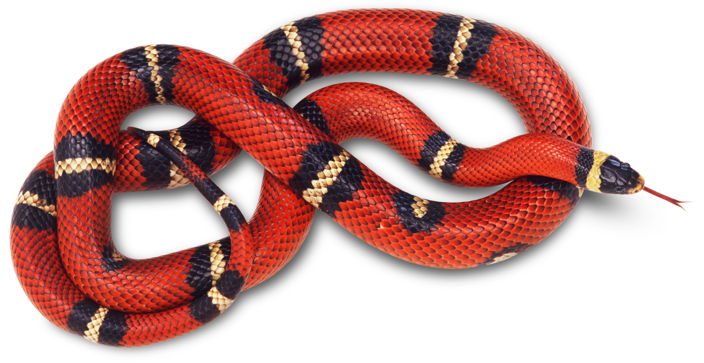

Animal Information
All about turtles
Turtles are reptiles of the order Testudines (or Chelonii[3]) characterised by a special bony or cartilaginous shell developed from their ribs and acting as a shield.[4] "Turtle" may refer to the order as a whole (American English) or to fresh-water and sea-dwelling testudines (British English).[5]
All about snakes
Snakes are elongated, legless, carnivorous reptiles of the suborder Serpentes[2] that can be distinguished from legless lizards by their lack of eyelids and external ears. Like all squamates, snakes are ectothermic, amniote vertebrates covered in overlapping scales. Many species of snakes have skulls with several more joints than their lizard ancestors, enabling them to swallow prey much larger than their heads with their highly mobile jaws. To accommodate their narrow bodies, snakes' paired organs (such as kidneys) appear one in front of the other instead of side by side, and most have only one functional lung. Some species retain a pelvic girdle with a pair of vestigial claws on either side of the cloaca.
All about frogs

A frog is any member of a diverse and largely carnivorous group of short-bodied, tailless amphibians composing the order Anura (Ancient Greek an-, without + oura, tail). The oldest fossil "proto-frog" appeared in the early Triassic of Madagascar, but molecular clock dating suggests their origins may extend further back to the Permian, 265 million years ago. Frogs are widely distributed, ranging from the tropics to subarctic regions, but the greatest concentration of species diversity is in tropical rainforests. There are approximately 4,800 recorded species, accounting for over 85% of extant amphibian species. They are also one of the five most diverse vertebrate orders.